Buhísimo flat remake (20 Oct)
Buhísimo's four prototype poses (owl-explaining, owl-celebrating, owl-encouraging, owl-thinking) redrawn in the flat style of the current Max and Matilda: same style text as remake_flat, NAG off (scale 1.0), no negative prompt, 6 seeds per pose. Ear tufts: every prompt that used the English word 'owl' gave tufts (24 of 24 tries in tuft_tests/, even with 'smooth round head, no ear tufts' in the positive prompt). Naming the species as 'buho de anteojos (Pulsatrix perspicillata)' with 'his head is a big perfect circle like a full moon' fixed it: 0 of 24 final images have ear tufts (three have a small single feather on top and are rejected). Seed 3 gives the most consistent set across all four poses (same turquoise strap, bag, brows and glasses), so all four picks are seed 3. Nothing is wired into the prototype yet.
Contact sheet · prompts.json · picks.json

Style references: current Max and Matilda
The approved flat style (prototype assets, remade 18 Oct).
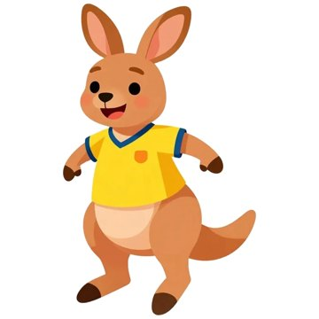
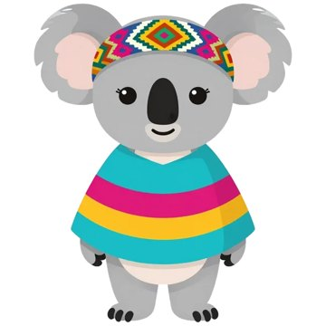
owl-explaining.webp
Seed 3: round head, white brows, glasses, turquoise strap and Wayuu mochila, one wing open; matches the other three picks. The gesture reads a little like a wave.
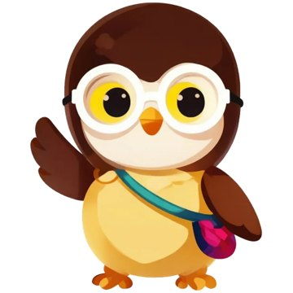

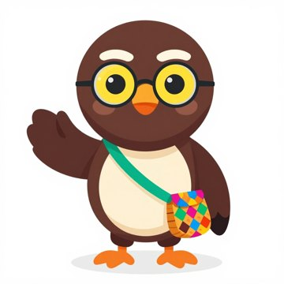

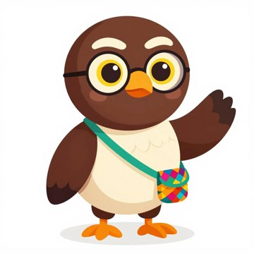

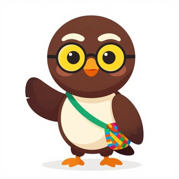

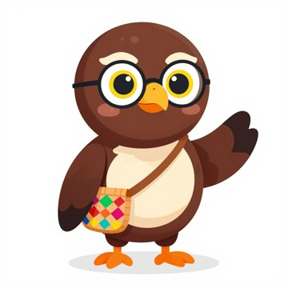

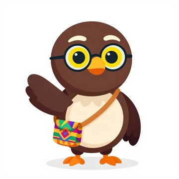

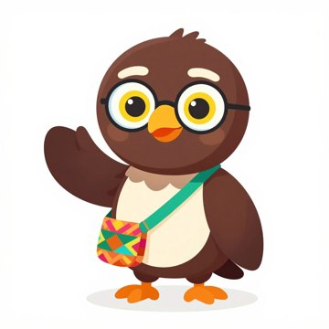
owl-celebrating.webp
Seed 3: both wings up, eyes closed with joy, open-beak smile, same turquoise strap as the set. Not jumping (feet on the ground), like the old picture's energy but calmer.
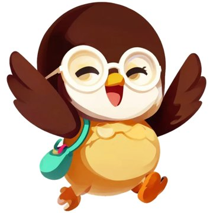

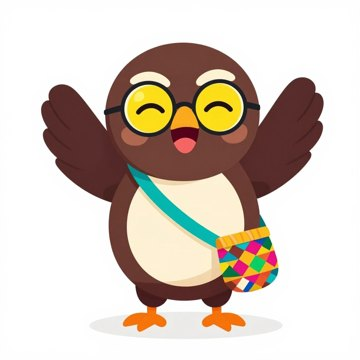

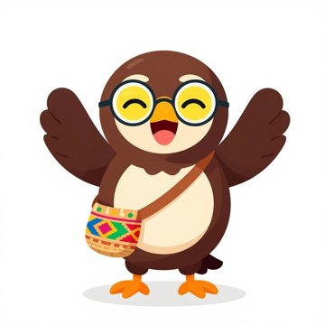

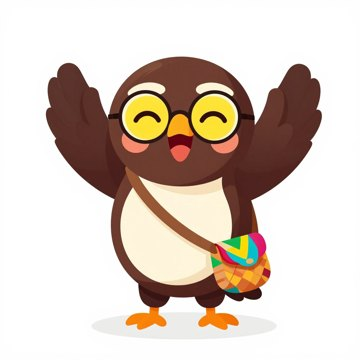

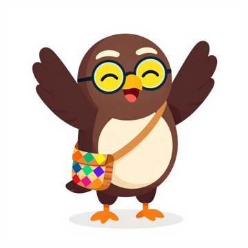

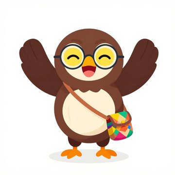

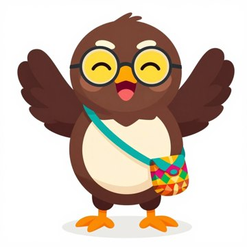
owl-encouraging.webp
Seed 3: warm smile and a clear wing thumbs-up (the old picture was a wave), same strap and bag as the set.
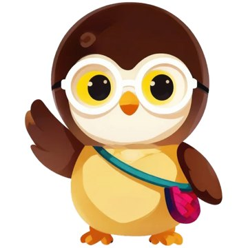

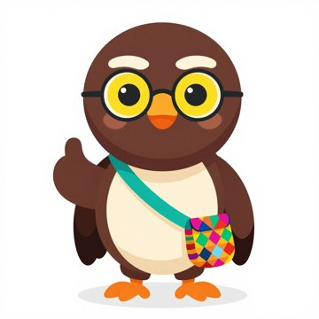

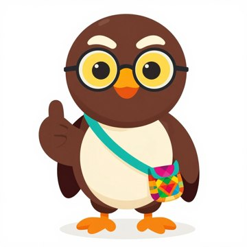

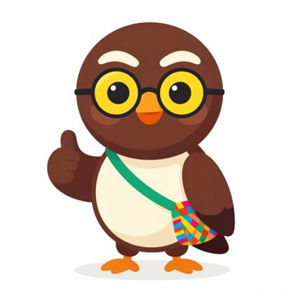

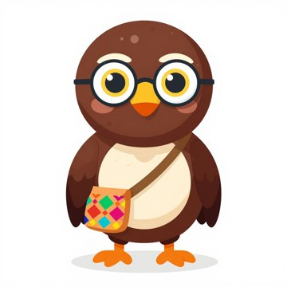

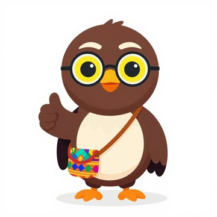

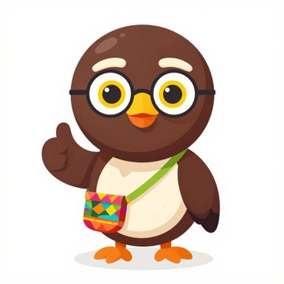
owl-thinking.webp
Seed 3: wing on chin, same strap and bag as the set. Eyes look forward rather than up.
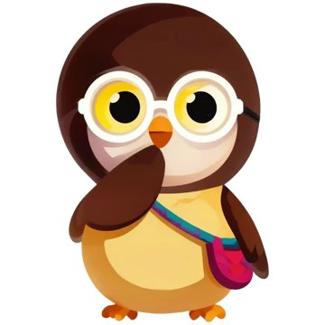

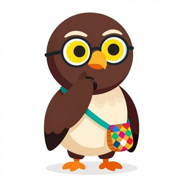

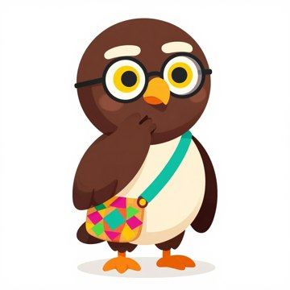

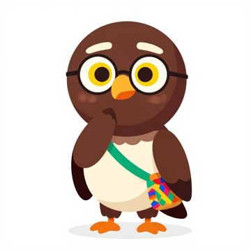

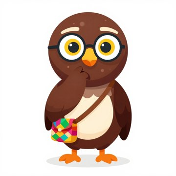

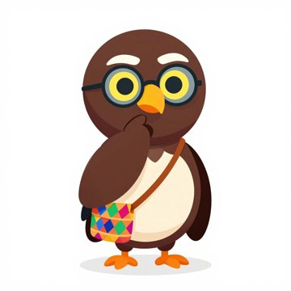

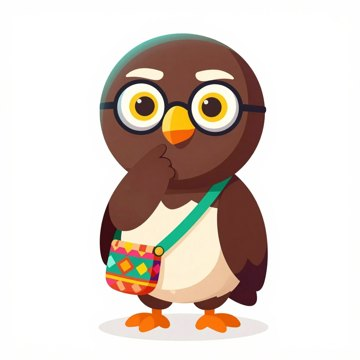